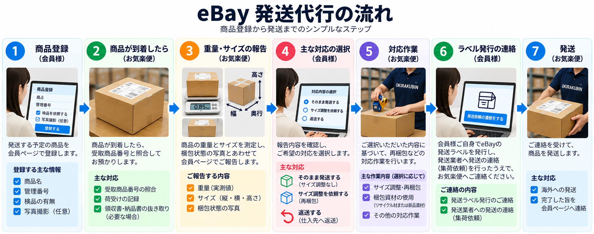

商品登録からサイズ確認、梱包方法の選択、発送までの全体の流れです。最初にこちらをご確認ください。

商品登録から梱包調整、発送依頼、請求書確認までの操作をまとめています。
eBay発送代行 会員ページ用商品登録からサイズ確認、梱包方法の選択、発送までの全体の流れです。最初にこちらをご確認ください。

ログイン後、商品のステータスと現在の対応状況を確認できます。黄色の項目は会員様の対応待ちです。内容を確認し、必要な操作を行ってください。

「商品登録」から、倉庫へ送る商品を登録します。登録時に、検品の有無と希望する作業内容を指定してください。

オプションでは写真撮影などを指定できます。登録直後の「商品確認中」は、管理者の確認前であれば編集・削除できます。
商品名・管理番号・作業依頼は必須です。商品ごとに管理番号が重複しないようご確認ください。登録後に検品などの追加作業が発生した場合は、別途作業料金が発生することがあります。
商品はステータスごとに分かれており、下記のステータスによって主な対応者が決まります。梱包依頼・保管中・発送依頼は会員様が対応する状態です。商品の状況を確認し、必要に応じて管理者へ指示・連絡をしてください。

| ステータス | 内容 | 主な対応者 |
|---|---|---|
| 商品確認中 | 登録後、倉庫での確認を待っている状態 | お気楽便 |
| 梱包依頼 | 計測結果を確認し、発送・再梱包・保管・返品を選択する状態 | 会員様 |
| 再梱包作業中 | 選択内容に基づいて再梱包している状態 | お気楽便 |
| 保管中 | 倉庫で保管している状態 | 会員様 |
| 発送依頼 | 発送方法を指定して発送依頼を行う状態 | 会員様 |
| 発送作業中 | 発送依頼後、発送完了を待っている状態 | お気楽便 |
| 発送完了 | 発送が完了した状態 | ― |
梱包依頼では、「情報」から検品結果とサイズ感を確認できます。管理者が入力した受取時のサイズ・重量・確認結果・写真を確認し、次の対応を選択してください。
「サイズ調整・再梱包」を選んだ場合は、梱包資材としてリサイクル材の使用可否なども指定します。
再梱包が必要な場合は「再梱包作業中」へ進み、作業後に再梱包後のサイズ・重量と梱包袋の使用可否が表示されます。

簡易アップロード写真には、商品受取時の梱包サイズや梱包状態を掲載します。写真ボタンを押すと大きく表示できます。オプションで写真・動画撮影を依頼した場合は「写真URL」にURLが表示されるため、Googleドライブで確認してください。
運送会社指定の梱包袋に入るかどうかは、商品の梱包サイズのみで判定しています。指定重量を超える場合は、梱包袋を使用しても重量区分の送料が適用されることがあります。詳細は各配送会社のホームページをご確認ください。基本的には、袋に入るサイズであれば防水対策としてパックに入れて発送します。
注文のキャンセルなどで保管が必要になった場合は、「保管商品へ移動」から保管へ変更できます。操作前に必ず管理者へ連絡してください。
特に作業中の商品は、作業完了後に変更すると不要な作業工数や追加料金が発生します。確認画面で「事前に管理者へ連絡しました」と、追加料金についての確認項目にチェックを入れてください。円滑な対応にご協力をお願いします。
商品の海外発送・国内配送・返品は、この画面から依頼してください。基本的な海外発送では「海外発送」を選択し、発行済みラベルを添付して発送依頼を行います。


不良在庫を国内で販売した場合や、国内の配送先へ送る場合は、必要に応じて「国内配送」を選択し、配送先を指定してください。国内配送は基本的にゆうパックで対応します。配送料はお気楽便が一時的に立て替え、後日請求書にて請求します。
発送依頼の商品を選択し、「選択中を保管商品へ戻す」から保管商品へ移動できます。
保管へ戻す前に管理者への事前連絡が必要です。発送依頼の商品はすでに梱包されているため、保管時に梱包を解除します。作業変更の追加料金と、再度発送する際の再梱包料金が発生します。確認画面の必須項目にチェックを入れた場合のみ移動できます。
依頼確定前に、選択商品・配送方法・ラベルファイルを必ず確認してください。
価格表には、各作業の料金と検品範囲を記載しています。実際の送料や作業料金の概算は、価格表の金額を参照する料金シミュレーターで確認してください。

国際送料や「個別見積」と表示される作業はシミュレーターの合計に含まれません。
管理者が発行したeBay発送代行の請求書を月ごとに確認し、CSVまたはPDFでダウンロードできます。

未発行の月はダウンロードできません。
トップには、運用に関するお知らせが表示されます。
「基本情報」では営業時間、発送時の注意事項、連絡方法などを確認できます。